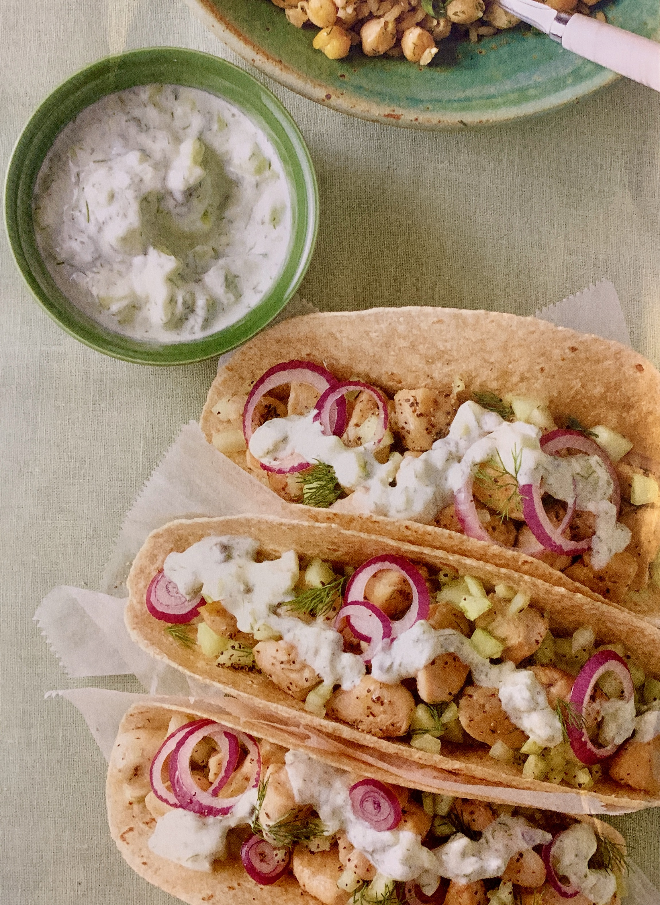

Greek Chicken Tacos
- 1 lb skinless chicken tenderloin strips, cubed
- Salt and Pepper
- 1 Tbsp olive oil
- 1 bag (10oz) frozen brown rice
- 1 can chickpeas, rinsed and drained
- 3 Tbsp choppped, fresh dill, divided
- 1/2 lemon, zested and juiced, divided
- 1/2 cup plain Greek yogurt
- 1/2 cucumber, peeled, seeded and chopped (about 1/2 cup), divided
- 1 Tbsp capers
- 8 whole wheat taco-size tortillas
- 1/2 red onion, thinly sliced
1 - Season chicken with salt and pepper. Heat oil in large skillet over medium-high heat. Once shimmering, add chiken. Cook 7 minutes or until chicken is browned adn cooked through (safe internal temp. 165 F).
2 -